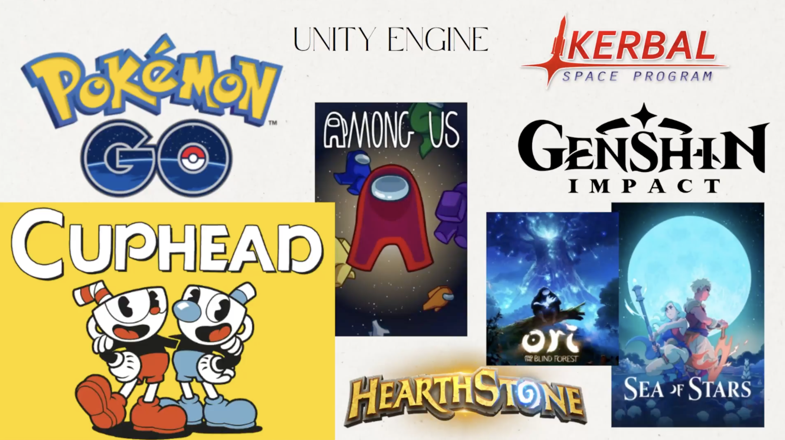

Video Game Development
Real world practical video game design, using industry standard software and tools.

Video Game Development is an interdisciplinary course that introduces students to the creative and technical aspects of designing and building video games. Students will explore multiple domains of game creation, including 3D modeling with Blender, graphic design using Adobe Illustrator, scripting with the C# programming language and sound design. Throughout the course students will brainstorm, design and develop their own video game concepts: crafting themes, stories and other gameplay features. This course emphasizes both programming and artistic expression, providing a comprehensive understanding of the processes behind modern game development. Students will also learn git / github which is an industry standard, widely used version control system.
- Focus 1: Graphic Design with Adobe illustrator
- Focus 2: 3-D Modeling with Blender
- Focus 3: Programming with C#
- Focus 4: Game engine skills with Unity 3-D